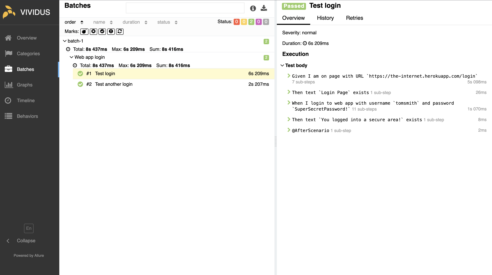

AI-first test automation
Custom agents built for your project cover every layer of it — web, mobile, APIs, data, visuals — and use VIVIDUS to actually execute what they write.
Can you cover login on our web app?
Read your project's steps and environments
Here you go — it reuses the login step you already have:
Scenario: Test loginGiven I am on page with URL `https://the-internet.herokuapp.com/login`Then text `Login Page` existsWhen I login to web app with username `tomsmith` and password `SuperSecretPassword!`Then text `You logged into a secure area!` exists
Saved it. Want me to run it now?
Yes — run it.
Running the scenario in Chrome
Passed — 2 scenarios in 8.4s, no failures
Here is the Allure report — both scenarios green:

Coverage
Web, mobile, APIs, data and visual checks are all the same conversation. The agent switches layer; you don't switch tools, and you keep one set of tests to maintain.
Reaching a new platform is a setting the agent already knows — not a new vendor, a new specialist hire or another licence to pay for.
Agents drive real browsers, locally or in the cloud.
Native iOS and Android, on devices, simulators and emulators.
Agents check service responses and the data behind them.
Agents catch unintended visual changes and accessibility issues.
Solution
The agents are built for your project — your steps, your environments, your conventions — and they reach VIVIDUS the same way from any assistant here. Nothing to standardise across the team first, and no extra licence to negotiate.
Agent definitions and the tests they produce are files in your repository. Change assistants next year and everything still runs.
FAQ
No — there is no code to write and no page objects to maintain. Every step either ships with VIVIDUS or is defined in your project as another sentence, so a repeated flow becomes one named step you reuse everywhere.
Tests are plain files in your repository, run by a single Gradle command. The sample project ships GitHub Actions, GitLab CI and Azure Pipelines configurations you can copy as they are.
Nothing. VIVIDUS is open source under Apache 2.0 — no seats, no quotas and no features locked behind a paid tier.
{kind=link}